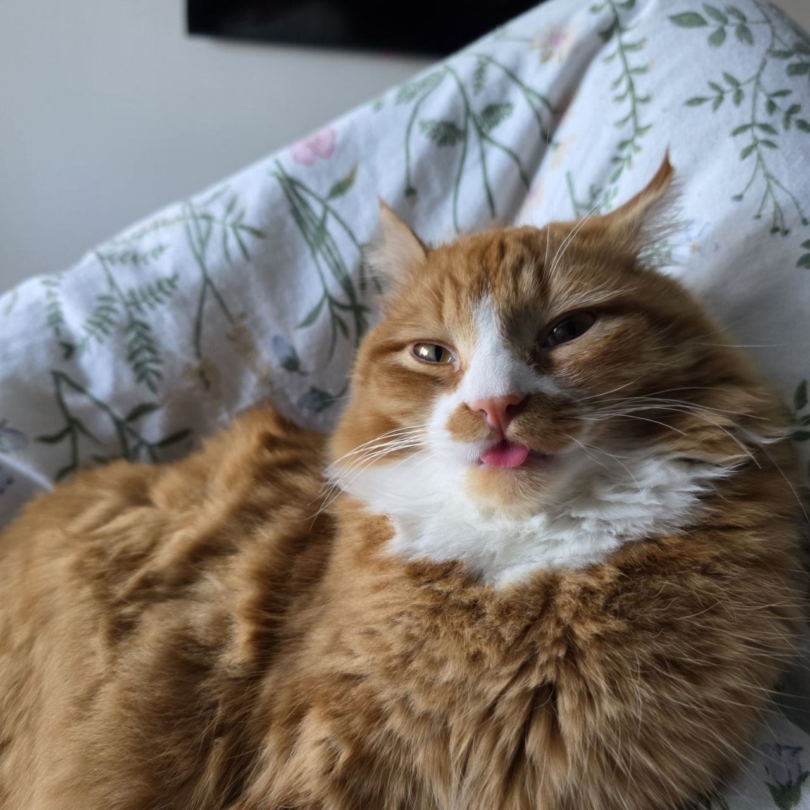

2 место Тащит всё в рот

Если что-то лежит и не приколочено — Чепа обязательно попробует это на зуб. Мысли о стоимости операции у ветеринара посещают меня очень часто, увы.
Официальный список жертв:
- 📄 Бумага (особенно важные документы)
- 🍽 Еда со стола — вообще любая
- 🧸 Игрушки
- 🩴 Резиновый коврик
- 🎧 Зарядки, наушники, любые провода